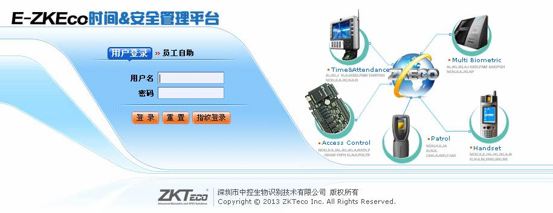
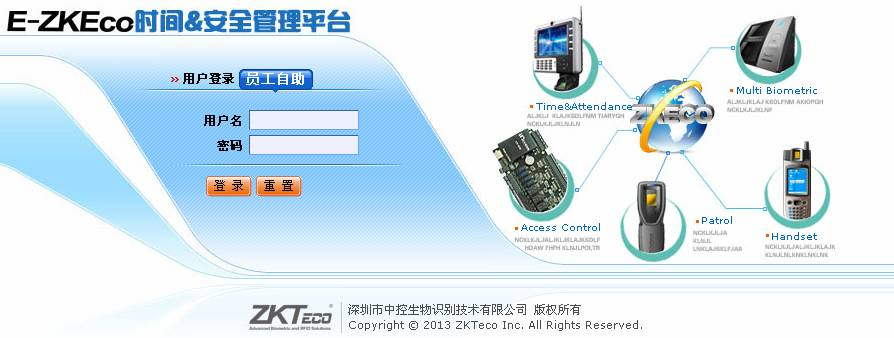
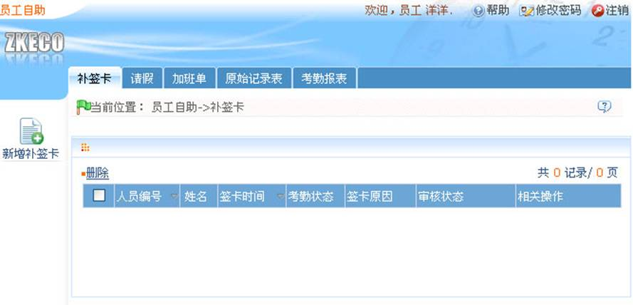

第2章系统管理
1、登录系统
-
 用户登录
用户登录
（1）、用户在服务器中安装完程序后，其他计算机即可通过网络访问该服务器，使用本系统。
（2）、打开浏览器，在地址栏输入服务器IP地址和端口号，单击回车，则进入系统的登录界面。
若是在服务器上使用，需要先打开【服务控制台】，并启动服务，再双击桌面ZKECO时间&安全管理平台图标，即弹出系统登录界面。
 注意：在Windows 7/Vista等系统中，请右键点击【服务控制台】，选择【以管理员身份运行】。
注意：在Windows 7/Vista等系统中，请右键点击【服务控制台】，选择【以管理员身份运行】。

（3）、在登入时，系统会检查服务器上是否插入软件狗。只有将软件狗插入服务器的USB插槽后，系统才能连接设备。软件狗是用来控制系统连接的设备数量的。购买本系统的时候请向销售商索要软件狗。当数据库中的设备数超过了软件狗所允许的设备数（考勤机默认为0台，门禁机默认为50台），用户将无法登录系统。如果需要连接超过软件狗所允许的设备数量时，请在服务控制器托盘程序中把授权号复制下来，发给我公司相关人员，申请升级后才能正常使用。
（4）、进入系统时，需要进行身份验证，以保证系统安全。我们会为初次使用本系统的用户提供一个超级用户（拥有全部操作权限）。输入用户名和密码，单击登录，或者在界面上点击“指纹登录”，然后在指纹仪上按管理员手指，进入系统主页。
 注意：超级用户的用户名为admin，密码admin，用户首次登录系统后，为保证系统使用安全，请使用“修改密码”功能修改此密码。
注意：超级用户的用户名为admin，密码admin，用户首次登录系统后，为保证系统使用安全，请使用“修改密码”功能修改此密码。
此超级用户可以为其公司内部人员分配新用户（如公司管理人员、登记员、门禁管理员、考勤统计员等）并配置相应用户的角色。具体操作请参见9.1.2用户管理。
-
员工自助
（1）、打开浏览器，在地址栏输入服务器IP地址和端口号，单击回车，则进入系统的登录界面，然后单击【员工自助】选项，页面显示如下：

用户名：即为员工的人员编号。
密码：默认密码为123456。
（2）、输入正确的用户名和密码，单击【登录】按钮，登录成功后页面显示如下：

在员工自助系统中，用户可以自助添加请假、补签卡、加班单和查看原始记录表与考勤报表。
员工自助添加成功后的请假、补签卡、加班单的审核状态都为否，系统管理员登录系统后即可在考勤系统的相应页面中查看到具体信息，并进行审核操作。审核通过后，员工自助添加的请假、补签卡、加班单才有效。
 提示：登录系统后建议员工及时修改密码。点击【修改密码】图标，进入修改密码页面，根据提示修改密码即可。
提示：登录系统后建议员工及时修改密码。点击【修改密码】图标，进入修改密码页面，根据提示修改密码即可。
2、退出系统
（1）、单击界面右上角的【注销】按钮，返回系统登录界面。
（2）、或者直接关闭浏览器，完全退出系统。
退出之后，在【服务控制台】中停止服务，并退出【服务控制台】。
3、个性设置
用户可通过本功能进行个性化的界面设置。单击【个性设置】，显示个性设置编辑界面，输入信息：E-mail 地址、名字、姓氏，单击【确定】完成设置。
修改后系统界面会进行相应改变。
4、系统手册
即系统帮助文件。在各个操作界面都会有“”图标，即当前页帮助，单击后可以看到针对当前页的帮助文件。
5、修改密码
超级用户和超级用户创建的新用户(系统为新用户设置的默认密码为“111111”)，可以使用“密码修改”功能修改登录密码，以保证系统的安全运行。单击【修改密码】，弹出编辑界面，输入旧密码、新密码、新密码确认，单击【确定】完成修改。
 注意：用户名不区分大小写，但密码区分大小写。
注意：用户名不区分大小写，但密码区分大小写。